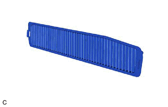
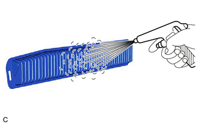
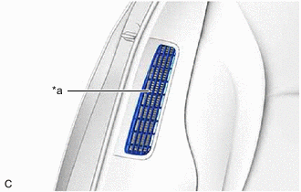

PROCEDURE
INSPECT NO. 1 HV BATTERY INTAKE FILTER
Tech Tips
If the vehicle is used in an area with heavy traffic or excessive dust, or if the rear seat is used frequently, the No. 1 HV battery intake filter may be clogged. Clean or replace the No. 1 HV battery intake filter as necessary.
If "Maintenance required for Traction battery cooling parts" is not displayed on the multi-information display, clean the No. 1 HV battery intake filter with it installed to the vehicle to prevent clogs.

Visually inspect the No. 1 HV battery intake filter.
| Standard |
|---|
| No clogs or damage. |
Note
If the No. 1 HV battery intake filter is damaged, replace it with a new one.
If the No. 1 HV battery intake filter is damaged, check if there is foreign matter inside the battery cooling blower assembly. Clean or replace the battery cooling blower assembly as necessary.
Do not clean the No. 1 HV battery intake filter with it installed to the vehicle.
Make sure to hold the fan of the battery cooling blower assembly when cleaning the battery cooling blower assembly with compressed air. If the fan is allowed to rotate, voltage will be generated, which may damage the battery cooling blower assembly circuit.
If the result is not as specified, replace the No. 1 HV battery intake filter.
CLEAN NO. 1 HV BATTERY INTAKE FILTER
When removed from the vehicle:

Clean the No. 1 HV battery intake filter by blowing compressed air as shown in the illustration.
Note
Do not use water or any other liquids when cleaning the No. 1 HV battery intake filter. Use only compressed air.
To prevent damage to the No. 1 HV battery intake filter, do not use a wire brush or other tool.
Do not clean the No. 1 HV battery intake filter with it installed to the vehicle.
Keep the air blow gun at least 30 mm (1.18 in.) away from the No. 1 HV battery intake filter.
Blow compressed air through the rear side of No. 1 HV battery intake filter.
When not removed from the vehicle:

| *a | Filter |
Clean the No. 1 HV battery intake filter using a vacuum cleaner or equivalent.
Note
Do not use water or any other liquids when cleaning the No. 1 HV battery intake filter.
To prevent damage to the No. 1 HV battery intake filter, do not use a wire brush or scrubber.
Do not use compressed air.
INSPECT NO. 2 HV BATTERY INTAKE FILTER
Tech Tips
Use the same procedure as for the No. 1 HV battery intake filter.
CLEAN NO. 2 HV BATTERY INTAKE FILTER
Tech Tips
Use the same procedure as for the No. 1 HV battery intake filter.